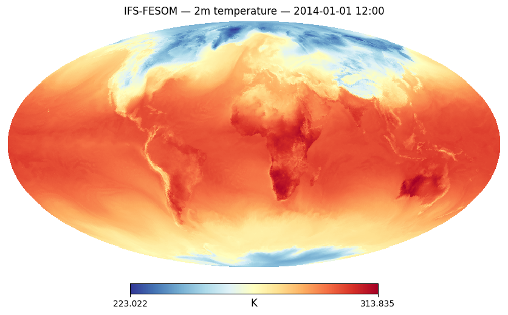
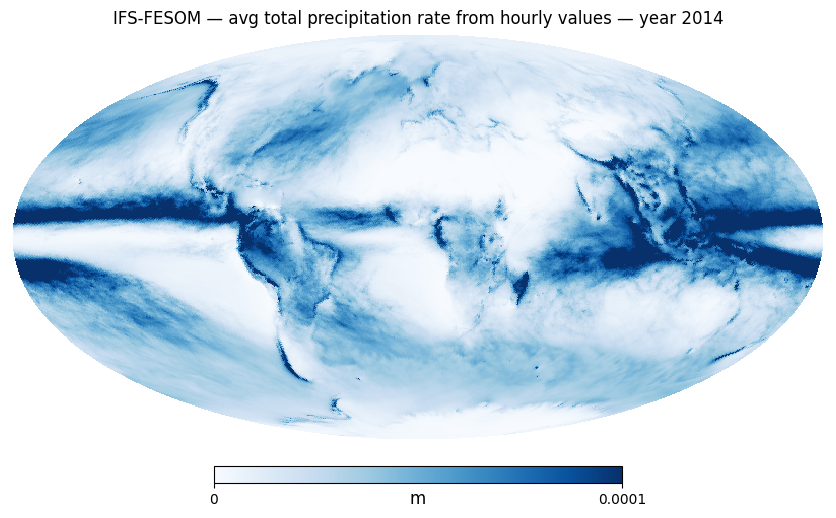
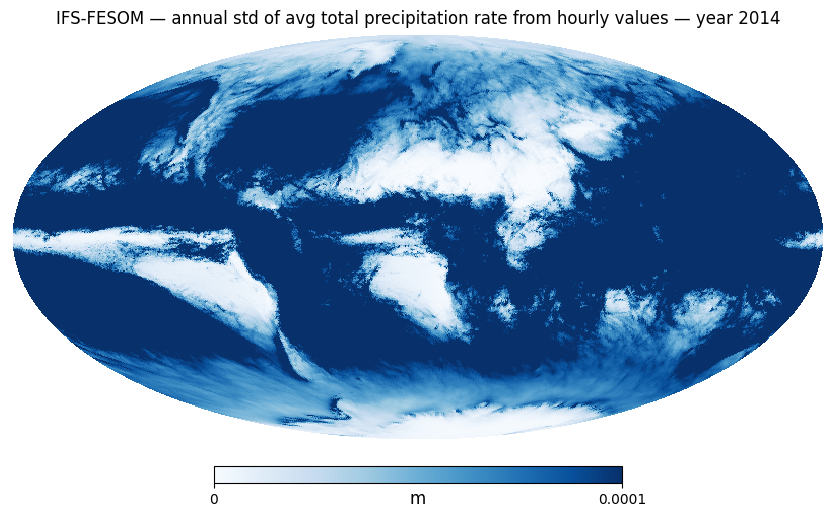
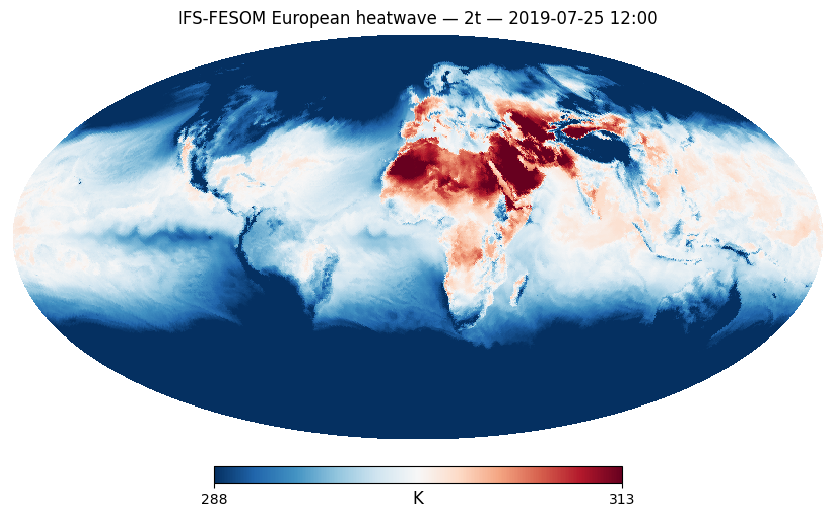
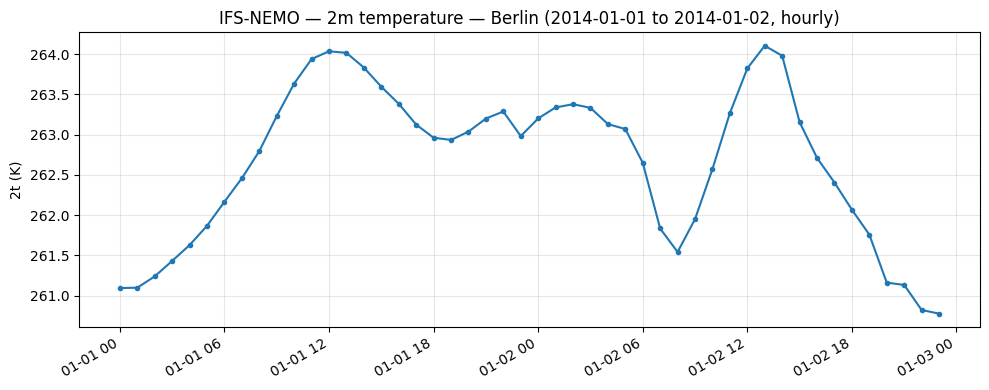
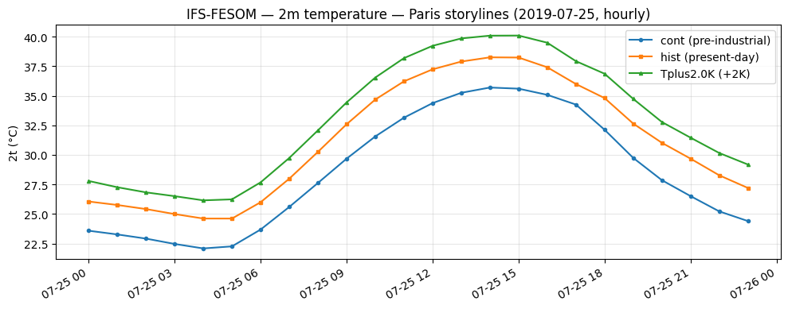
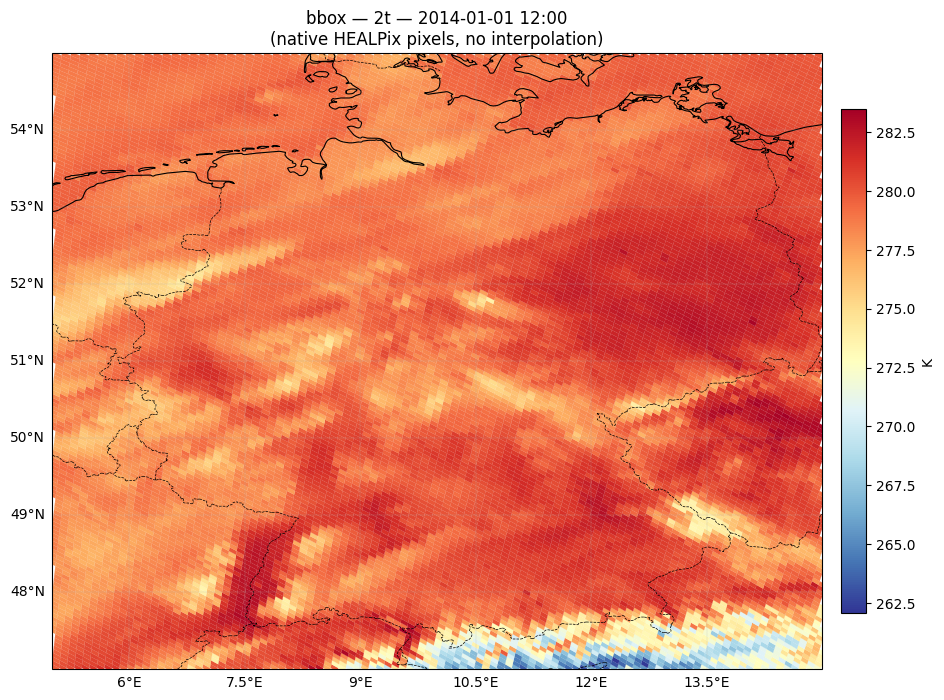
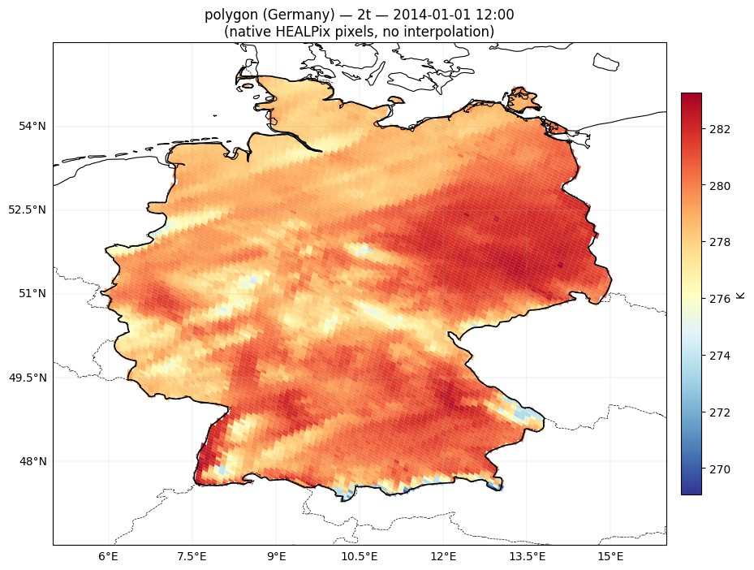
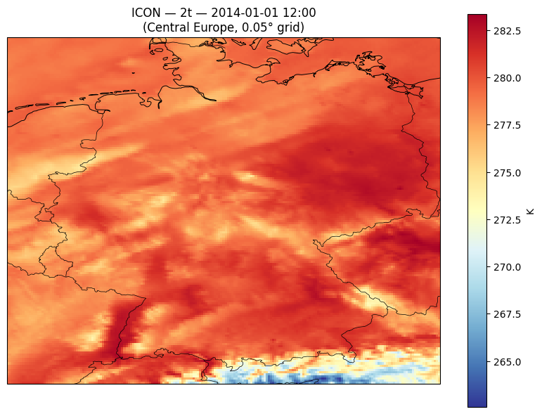

Lazy Browse — DestinE Climate DT Hourly Portfolio#
This notebook explores the hourly (clte) stream of the Climate DT Generation 2 data portfolio.
Prerequisites: run 01_key_destine_once.ipynb once to authenticate.
Show code cell source
import logging, warnings
import earthkit.data
# Disable earthkit disk cache (polytope_zarr caches decoded arrays in memory)
earthkit.data.config.set("cache-policy", "off")
# Silence verbose output from polytope / earthkit internals
for _ln in ("polytope", "polytope.api", "earthkit.data", "urllib3"):
logging.getLogger(_ln).setLevel(logging.WARNING)
warnings.filterwarnings("ignore", category=DeprecationWarning)
Show code cell source
from polytope_zarr import PolytopeZarrStore
1. Create hourly store#
The function PolytopeZarrStore.from_climate_dt(frequency="hourly")
automatically selects PORTFOLIO_GEN2_CLTE.
Show code cell source
# ── Configuration ─────────────────────────────────────────────────
# ── Choose a levtype (uncomment one) ──────────────────────────────
LEVTYPE = "sfc" # 34 vars — surface (14 instant + 20 hourly mean)
# LEVTYPE = "pl" # 9 vars — pressure levels (19 levels)
# LEVTYPE = "hl" # 2 vars — height levels (100 m, IFS-only)
# LEVTYPE = "sol" # 2 vars — soil / snow
# LEVTYPE = "o2d" # 12 vars — 2-D ocean & sea ice (daily)
# LEVTYPE = "o3d" # 5 vars — 3-D ocean (daily, up to 75 levels)
store = PolytopeZarrStore.from_climate_dt(
models=["ICON", "IFS-FESOM", "IFS-NEMO"],
experiment="hist",
resolution="standard", # 'standard', 'high'
levtype=LEVTYPE,
frequency="hourly",
start_date="1990-01-01T00:00:00",
end_date="2014-12-31T23:00:00",
)
print(store)
<PolytopeZarrStore 34 variables (time=219144, cell=196608, model=3)>
2. Open as xarray Dataset — lazy browse#
Show code cell source
ds = store.open()
ds
<xarray.Dataset> Size: 18TB
Dimensions: (model: 3, time: 219144, cell: 196608)
Coordinates:
* model (model) object 24B 'ICON' 'IFS-FESOM' 'IFS-NEMO'
* time (time) datetime64[ns] 2MB 1990-01-01 ... 2014-12-31T23:00:00
* cell (cell) int32 786kB 0 1 2 3 4 ... 196604 196605 196606 196607
Data variables: (12/34)
10si (model, time, cell) float32 517GB ...
10u (model, time, cell) float32 517GB ...
10v (model, time, cell) float32 517GB ...
2d (model, time, cell) float32 517GB ...
2t (model, time, cell) float32 517GB ...
avg_ie (model, time, cell) float32 517GB ...
... ...
sp (model, time, cell) float32 517GB ...
tcc (model, time, cell) float32 517GB ...
tciw (model, time, cell) float32 517GB ...
tclw (model, time, cell) float32 517GB ...
tcw (model, time, cell) float32 517GB ...
tcwv (model, time, cell) float32 517GB ...
Attributes:
_polytope_store: <PolytopeZarrStore 34 variables (time=219144, cell=1966...3. Plot a single hourly field (triggers lazy fetch)#
Only now does the store actually call Polytope — fetching data for the selected model, time, and variable.
Show code cell source
import healpy as hp
import matplotlib.pyplot as plt
field = ds["2t"].sel(model="IFS-FESOM", time="2014-01-01T12:00")
print(f"Fetching {dict(field.sizes)} values...")
values = field.values # triggers the Polytope request
Show code cell source
hp.mollview(values, title="IFS-FESOM — 2m temperature — 2014-01-01 12:00",
unit="K", cmap="RdYlBu_r", nest=True, flip='geo')
plt.show()

Show code cell source
#annual mean, can take around 6-10 minutes depending on your connection
field2 = ds["avg_tprate"].polytope.sel(model="IFS-FESOM", time=slice("2014-01-01T00:00", "2014-12-31T23:00")).mean("time")
field2_values_mean = field2.values # triggers the Polytope request
Show code cell source
hp.mollview(field2_values_mean,
title="IFS-FESOM — avg total precipitation rate from hourly values — year 2014",
unit="m", cmap="Blues", min=0, max=0.0001, nest=True, flip='geo')
plt.show()

Show code cell source
# in the next call, the data is read from cache, and we can apply a different reduction (std instead of mean) without re-reading the data
field2 = ds["avg_tprate"].sel(model="IFS-FESOM", time=slice("2014-01-01T00:00", "2014-12-31T23:00")).std("time")
hp.mollview(field2.values,
title="IFS-FESOM — annual std of avg total precipitation rate from hourly values — year 2014",
unit="m", cmap="Blues", min=0, max=0.0001, nest=True, flip='geo')
plt.show()

Create a daily ocean store#
Show code cell source
# ── Configuration ─────────────────────────────────────────────────
LEVTYPE = "o2d"
daily_store = PolytopeZarrStore.from_climate_dt(
models=["ICON", "IFS-FESOM", "IFS-NEMO"],
experiment="hist",
levtype=LEVTYPE,
frequency="hourly",
start_date="1990-01-01",
end_date="2014-12-31",
)
print(daily_store)
<PolytopeZarrStore 12 variables (time=9131, cell=196608, model=3)>
Show code cell source
ds_oce = daily_store.open()
ds_oce
<xarray.Dataset> Size: 259GB
Dimensions: (model: 3, time: 9131, cell: 196608)
Coordinates:
* model (model) object 24B 'ICON' 'IFS-FESOM' 'IFS-NEMO'
* time (time) datetime64[ns] 73kB 1990-01-01 1990-01-02 ... 2014-12-31
* cell (cell) int32 786kB 0 1 2 3 4 ... 196604 196605 196606 196607
Data variables:
avg_hc300m (model, time, cell) float32 22GB ...
avg_hc700m (model, time, cell) float32 22GB ...
avg_hcbtm (model, time, cell) float32 22GB ...
avg_siconc (model, time, cell) float32 22GB ...
avg_sithick (model, time, cell) float32 22GB ...
avg_siue (model, time, cell) float32 22GB ...
avg_sivn (model, time, cell) float32 22GB ...
avg_sivol (model, time, cell) float32 22GB ...
avg_snvol (model, time, cell) float32 22GB ...
avg_sos (model, time, cell) float32 22GB ...
avg_tos (model, time, cell) float32 22GB ...
avg_zos (model, time, cell) float32 22GB ...
Attributes:
_polytope_store: <PolytopeZarrStore 12 variables (time=9131, cell=196608...Show code cell source
import healpy as hp
import matplotlib.pyplot as plt
ocefield = ds_oce["avg_zos"].sel(model="IFS-NEMO", time="2014-01-01")
print(f"Fetching {dict(ocefield.sizes)} values...")
ocefield_values = ocefield.values # triggers the Polytope request
Show code cell source
hp.mollview(ocefield_values, title="IFS-NEMO — Sea Surface Height — 2014-01-01",
unit="m", cmap="RdYlBu_r", nest=True, flip='geo')
plt.show()
Create an hourly storyline store (story-nudging)#
The storylines use activity="story-nudging" and experiments are cont (pre-industrial climate), hist (present-day climate), and Tplus2.0K (+2K warmer world).
The dataset dimension is climate (not model).
Show code cell source
story_store = PolytopeZarrStore.from_climate_dt(
models=["IFS-FESOM"],
experiment=["cont", "hist", "Tplus2.0K"],
activity="story-nudging",
levtype="sfc",
frequency="hourly",
start_date="2017-01-01T00:00:00",
end_date="2024-12-31T23:00:00",
resolution="standard",
)
print(story_store)
<PolytopeZarrStore 34 variables (time=70128, cell=196608, climate=3)>
Show code cell source
ds_story = story_store.open()
ds_story
<xarray.Dataset> Size: 6TB
Dimensions: (climate: 3, time: 70128, cell: 196608)
Coordinates:
* climate (climate) object 24B 'cont' 'hist' 'Tplus2.0K'
* time (time) datetime64[ns] 561kB 2017-01-01 ... 2024-12-31T23:00:00
* cell (cell) int32 786kB 0 1 2 3 4 ... 196604 196605 196606 196607
Data variables: (12/34)
10si (climate, time, cell) float32 165GB ...
10u (climate, time, cell) float32 165GB ...
10v (climate, time, cell) float32 165GB ...
2d (climate, time, cell) float32 165GB ...
2t (climate, time, cell) float32 165GB ...
avg_ie (climate, time, cell) float32 165GB ...
... ...
sp (climate, time, cell) float32 165GB ...
tcc (climate, time, cell) float32 165GB ...
tciw (climate, time, cell) float32 165GB ...
tclw (climate, time, cell) float32 165GB ...
tcw (climate, time, cell) float32 165GB ...
tcwv (climate, time, cell) float32 165GB ...
Attributes:
_polytope_store: <PolytopeZarrStore 34 variables (time=70128, cell=19660...Show code cell source
# Note: look at Paris heatwave on 2019-07-25
field_story_PI = ds_story["2t"].sel(climate="cont", time="2019-07-25T12:00")
print(f"Fetching {dict(field_story_PI.sizes)} values...")
field_story_PD = ds_story["2t"].sel(climate="hist", time="2019-07-25T12:00")
print(f"Fetching {dict(field_story_PD.sizes)} values...")
field_story_2K = ds_story["2t"].sel(climate="Tplus2.0K", time="2019-07-25T12:00")
print(f"Fetching {dict(field_story_2K.sizes)} values...")
hp.mollview(field_story_PD.values, title="IFS-FESOM European heatwave — 2t — 2019-07-25 12:00",
unit="K", cmap="RdBu_r", nest=True, flip="geo", min=288, max=313)
plt.show()
Fetching {'cell': 196608} values...
Fetching {'cell': 196608} values...
Fetching {'cell': 196608} values...

Server-side spatial subsetting (Polytope features)#
.polytope.sel() also supports server-side spatial extraction via the
Polytope feature API. Pass bbox or polygon to retrieve only a smaller subset of HEALPix cells, or point to get only a timeseries at a single point.
Feature extraction — timeseries (hourly)#
Hourly timeseries uses point=(lat, lon) and returns CoverageJSON.
The response contains hourly time coordinates and field values for plotting.
Show code cell source
# Point timeseries — hourly (clte stream)
ts_result = ds["2t"].polytope.sel(
model="IFS-NEMO",
time=slice("2014-01-01T00:00", "2014-01-02T23:00"),
point=(52.5, 13.4), # Berlin
)
print(type(ts_result))
🌍 timeseries request for 2t (20140101/to/20140102)
<class 'dict'>
Show code cell source
import pandas as pd
# Extract times and values from CoverageJSON
cov = ts_result["coverages"][0]
times = pd.to_datetime(cov["domain"]["axes"]["t"]["values"])
values = cov["ranges"]["2t"]["values"]
fig, ax = plt.subplots(figsize=(10, 4))
ax.plot(times, values, marker="o", markersize=3)
ax.set_ylabel("2t (K)")
ax.set_title("IFS-NEMO — 2m temperature — Berlin (2014-01-01 to 2014-01-02, hourly)")
ax.grid(True, alpha=0.3)
fig.autofmt_xdate()
plt.tight_layout()
plt.show()

Show code cell source
# 3x Paris point timeseries for different climates (PI, PD, +2K) — hourly (storyline activity)
ts_story_PI = ds_story["2t"].polytope.sel(
climate="cont",
time=slice("2019-07-25T00:00", "2019-07-25T23:00"),
point=(48.85, 2.35), # Paris
)
ts_story_PD = ds_story["2t"].polytope.sel(
climate="hist",
time=slice("2019-07-25T00:00", "2019-07-25T23:00"),
point=(48.85, 2.35), # Paris
)
ts_story_2K = ds_story["2t"].polytope.sel(
climate="Tplus2.0K",
time=slice("2019-07-25T00:00", "2019-07-25T23:00"),
point=(48.85, 2.35), # Paris
)
print(type(ts_story_PI))
print(type(ts_story_PD))
print(type(ts_story_2K))
🌍 timeseries request for 2t (20190725/to/20190725)
🌍 timeseries request for 2t (20190725/to/20190725)
🌍 timeseries request for 2t (20190725/to/20190725)
<class 'dict'>
<class 'dict'>
<class 'dict'>
Show code cell source
import pandas as pd
import numpy as np
# Extract times and values from CoverageJSON for each scenario
cov_PI = ts_story_PI["coverages"][0]
times = pd.to_datetime(cov_PI["domain"]["axes"]["t"]["values"])
values_PI = np.array(cov_PI["ranges"]["2t"]["values"])
cov_PD = ts_story_PD["coverages"][0]
values_PD = np.array(cov_PD["ranges"]["2t"]["values"])
cov_2K = ts_story_2K["coverages"][0]
values_2K = np.array(cov_2K["ranges"]["2t"]["values"])
fig, ax = plt.subplots(figsize=(10, 4))
ax.plot(times, values_PI - 273.15, marker="o", markersize=3, label="cont (pre-industrial)")
ax.plot(times, values_PD - 273.15, marker="s", markersize=3, label="hist (present-day)")
ax.plot(times, values_2K - 273.15, marker="^", markersize=3, label="Tplus2.0K (+2K)")
ax.set_ylabel("2t (°C)")
ax.set_title("IFS-FESOM — 2m temperature — Paris storylines (2019-07-25, hourly)")
ax.legend()
ax.grid(True, alpha=0.3)
fig.autofmt_xdate()
plt.tight_layout()
plt.show()

Let’s create a high-resolution store with the same parameters, but resolution=”high”. This will have more pixels and thus more detail in the plot, but will still be just as easy to access thanks to Polytope’s efficient server-side subsetting.
Show code cell source
store_high = PolytopeZarrStore.from_climate_dt(
models=["ICON", "IFS-FESOM", "IFS-NEMO"],
experiment="hist",
resolution="high", # 'standard', 'high'
levtype="sfc",
frequency="hourly",
start_date="1990-01-01T00:00:00",
end_date="2014-12-31T23:00:00",
)
print(store_high)
<PolytopeZarrStore 34 variables (time=219144, cell=12582912, model=3)>
Show code cell source
ds_high = store_high.open()
ds_high
<xarray.Dataset> Size: 1PB
Dimensions: (model: 3, time: 219144, cell: 12582912)
Coordinates:
* model (model) object 24B 'ICON' 'IFS-FESOM' 'IFS-NEMO'
* time (time) datetime64[ns] 2MB 1990-01-01 ... 2014-12-31T23:00:00
* cell (cell) int32 50MB 0 1 2 3 ... 12582909 12582910 12582911
Data variables: (12/34)
10si (model, time, cell) float32 33TB ...
10u (model, time, cell) float32 33TB ...
10v (model, time, cell) float32 33TB ...
2d (model, time, cell) float32 33TB ...
2t (model, time, cell) float32 33TB ...
avg_ie (model, time, cell) float32 33TB ...
... ...
sp (model, time, cell) float32 33TB ...
tcc (model, time, cell) float32 33TB ...
tciw (model, time, cell) float32 33TB ...
tclw (model, time, cell) float32 33TB ...
tcw (model, time, cell) float32 33TB ...
tcwv (model, time, cell) float32 33TB ...
Attributes:
_polytope_store: <PolytopeZarrStore 34 variables (time=219144, cell=1258...Feature extraction — bounding box (native HEALPix)#
bbox=(south, west, north, east) returns native HEALPix pixels within the bounding box.
The cells below render them as filled polygons using healpy.boundaries() — no interpolation needed.
See also: climate-dt-earthkit-fe-boundingbox.ipynb · climate-dt-earthkit-geotiff.ipynb (bbox → GeoTIFF)
Show code cell source
# Bounding box — single hour
bbox_result = ds_high["2t"].polytope.sel(
model="ICON",
time="2014-01-01T12:00",
bbox=(47, 5, 55, 15), # (south, west, north, east)
)
print(type(bbox_result))
bbox_result
🌍 boundingbox request for 2t (20140101)
<class 'xarray.core.dataset.Dataset'>
<xarray.Dataset> Size: 615kB
Dimensions: (time: 1, points: 15363)
Coordinates:
* time (time) datetime64[ns] 8B 2014-01-01T12:00:00
* points (points) int64 123kB 0 1 2 3 4 ... 15358 15359 15360 15361 15362
latitude (points) float64 123kB 47.01 47.01 47.01 ... 54.96 54.96 54.96
longitude (points) float64 123kB 14.74 14.54 14.64 ... 14.01 14.25 13.77
levelist (points) float64 123kB 0.0 0.0 0.0 0.0 0.0 ... 0.0 0.0 0.0 0.0
Data variables:
2t (time, points) float64 123kB 273.3 271.3 269.5 ... 280.0 279.6
Attributes: (12/16)
activity: baseline
class: d1
dataset: climate-dt
Forecast date: 2014-01-01T12:00:00Z
experiment: hist
expver: 0001
... ...
resolution: high
stream: clte
type: fc
number: 0
step: 0
date: 2014-01-01T12:00:00ZShow code cell source
import numpy as np
import cartopy.crs as ccrs
import cartopy.feature as cfeature
from matplotlib.collections import PolyCollection
import matplotlib.colors as mcolors
nside = store_high.nside
da = bbox_result["2t"].squeeze()
lats = bbox_result.coords["latitude"].values
lons = bbox_result.coords["longitude"].values
values = da.values.ravel()
# HEALPix pixel indices (NESTED)
theta = np.radians(90.0 - lats)
phi = np.radians(lons)
pix_ids = hp.ang2pix(nside, theta, phi, nest=True)
# Get pixel boundary vertices — only for our pixels, not the full sky
n_steps = 50
boundaries = hp.boundaries(nside, pix_ids, step=n_steps, nest=True)
# Convert boundary xyz → lon/lat and build polygon list
polygons = []
for i in range(len(pix_ids)):
bx, by, bz = boundaries[i]
b_lon = np.degrees(np.arctan2(by, bx))
b_lat = np.degrees(np.arcsin(bz))
polygons.append(list(zip(b_lon, b_lat)))
# Plot with cartopy — native HEALPix cells, no interpolation
fig, ax = plt.subplots(subplot_kw={"projection": ccrs.PlateCarree()}, figsize=(10, 7))
vmin, vmax = np.nanmin(values), np.nanmax(values)
norm = mcolors.Normalize(vmin=vmin, vmax=vmax)
cmap = plt.cm.RdYlBu_r
coll = PolyCollection(polygons, transform=ccrs.PlateCarree(),
edgecolors="face", linewidths=0.1)
coll.set_array(values)
coll.set_cmap(cmap)
coll.set_norm(norm)
ax.add_collection(coll)
ax.add_feature(cfeature.COASTLINE, linewidth=0.8)
ax.add_feature(cfeature.BORDERS, linewidth=0.5, linestyle="--")
ax.set_extent([5, 15, 47, 55])
gl = ax.gridlines(draw_labels=True, linewidth=0.3, alpha=0.5)
gl.top_labels = False
gl.right_labels = False
plt.colorbar(coll, ax=ax, label="K", shrink=0.8, pad=0.02)
ax.set_title("bbox — 2t — 2014-01-01 12:00\n(native HEALPix pixels, no interpolation)")
plt.tight_layout()
plt.show()

Feature extraction — polygon (country cut-out)#
Uses earthkit.geo.cartography.country_polygons() to get the boundary
of any named country, then passes it to the Polytope polygon feature.
Returns native HEALPix cells inside the country shape — no interpolation.
Show code cell source
import earthkit.geo.cartography
# Get country boundary from Natural Earth via earthkit-geo
COUNTRY = "Germany"
shapes = earthkit.geo.cartography.country_polygons([COUNTRY], resolution=50e6)
poly_result = ds_high["2t"].polytope.sel(
model="ICON",
time="2014-01-01T12:00",
polygon=shapes,
)
print(f"{COUNTRY}: {len(shapes)} sub-polygon(s), {sum(len(s) for s in shapes)} vertices total")
print(type(poly_result))
poly_result
🌍 polygon request for 2t (20140101)
Germany: 6 sub-polygon(s), 562 vertices total
<class 'xarray.core.dataset.Dataset'>
<xarray.Dataset> Size: 352kB
Dimensions: (time: 1, points: 8796)
Coordinates:
* time (time) datetime64[ns] 8B 2014-01-01T12:00:00
* points (points) int64 70kB 0 1 2 3 4 5 ... 8790 8791 8792 8793 8794 8795
latitude (points) float64 70kB 47.31 47.36 47.36 ... 54.87 54.87 54.87
longitude (points) float64 70kB 10.2 10.21 10.31 ... 8.738 8.857 8.976
levelist (points) float64 70kB 0.0 0.0 0.0 0.0 0.0 ... 0.0 0.0 0.0 0.0 0.0
Data variables:
2t (time, points) float64 70kB 271.3 274.3 271.7 ... 278.6 278.1
Attributes: (12/15)
activity: baseline
class: d1
dataset: climate-dt
experiment: hist
expver: 0001
generation: 2
... ...
resolution: high
stream: clte
type: fc
number: 0
step: 0
date: 2014-01-01 12:00:00ZShow code cell source
nside = store_high.nside
da = poly_result["2t"].squeeze()
lats = poly_result.coords["latitude"].values
lons = poly_result.coords["longitude"].values
values = da.values.ravel()
# HEALPix pixel indices (NESTED)
theta = np.radians(90.0 - lats)
phi = np.radians(lons)
pix_ids = hp.ang2pix(nside, theta, phi, nest=True)
n_steps = 50
boundaries = hp.boundaries(nside, pix_ids, step=n_steps, nest=True)
polygons = []
for i in range(len(pix_ids)):
bx, by, bz = boundaries[i]
b_lon = np.degrees(np.arctan2(by, bx))
b_lat = np.degrees(np.arcsin(bz))
polygons.append(list(zip(b_lon, b_lat)))
fig, ax = plt.subplots(subplot_kw={"projection": ccrs.PlateCarree()}, figsize=(10, 7))
vmin, vmax = np.nanmin(values), np.nanmax(values)
norm = mcolors.Normalize(vmin=vmin, vmax=vmax)
coll = PolyCollection(polygons, transform=ccrs.PlateCarree(),
edgecolors="face", linewidths=0.1)
coll.set_array(values)
coll.set_cmap(plt.cm.RdYlBu_r)
coll.set_norm(norm)
ax.add_collection(coll)
# Overlay country outline from earthkit-geo shapes
for shape in shapes:
s_lons = [pt[1] for pt in shape]
s_lats = [pt[0] for pt in shape]
ax.plot(s_lons, s_lats, color="black", linewidth=1.2, transform=ccrs.PlateCarree())
ax.add_feature(cfeature.COASTLINE, linewidth=0.8)
ax.add_feature(cfeature.BORDERS, linewidth=0.5, linestyle="--")
ax.set_extent([5, 16, 46.5, 55.5])
gl = ax.gridlines(draw_labels=True, linewidth=0.3, alpha=0.5)
gl.top_labels = False
gl.right_labels = False
plt.colorbar(coll, ax=ax, label="K", shrink=0.8, pad=0.02)
ax.set_title(f"polygon ({COUNTRY}) — 2t — 2014-01-01 12:00\n(native HEALPix pixels, no interpolation)")
plt.tight_layout()
plt.show()

Area subsetting with MARS keywords + server-side regridding#
area=(north, west, south, east) returns data on a regular lat/lon grid (server-side interpolation).
Good choices are grid="0.25/0.25" for standard resolution and grid="0.05/0.05" for high-resolution data. You can use any other regular grid to control the output resolution.
Show code cell source
# Area subset over Central Europe — 24 hourly steps
area_hourly = ds_high["2t"].polytope.sel(
model="ICON",
time=slice("2014-01-01T00:00", "2014-01-01T23:00"),
area=(55, 5, 47, 15), # (north, west, south, east)
#grid="0.05/0.05", # default for high resolution
)
area_hourly
🌍 area request for 2t (20140101/to/20140101, area=55/5/47/15, grid=0.05/0.05)
<xarray.Dataset> Size: 6MB
Dimensions: (time: 24, latitude: 161, longitude: 201)
Coordinates:
* time (time) datetime64[ns] 192B 2014-01-01 ... 2014-01-01T23:00:00
* latitude (latitude) float64 1kB 55.0 54.95 54.9 54.85 ... 47.1 47.05 47.0
* longitude (longitude) float64 2kB 5.0 5.05 5.1 5.15 ... 14.9 14.95 15.0
Data variables:
2t (time, latitude, longitude) float64 6MB ...
Attributes:
param: 2t
paramId: 167
class: d1
stream: clte
levtype: sfc
type: fc
expver: 0001
date: 20140101
time: 0
domain: g
Conventions: CF-1.8
institution: ECMWFShow code cell source
var_name = list(area_hourly.data_vars)[0]
field_noon = area_hourly[var_name].sel(time="2014-01-01T12:00")
fig, ax = plt.subplots(subplot_kw={"projection": ccrs.PlateCarree()}, figsize=(8, 6))
field_noon.plot(ax=ax, transform=ccrs.PlateCarree(), cmap="RdYlBu_r",
cbar_kwargs={"label": "K"})
ax.add_feature(cfeature.BORDERS, linewidth=0.5)
ax.add_feature(cfeature.COASTLINE, linewidth=0.7)
ax.set_title(f"ICON — {var_name} — 2014-01-01 12:00\n(Central Europe, 0.05° grid)")
plt.tight_layout()
plt.show()

Notes#
Automatic batching: use
.polytope.sel(time=slice(...))to auto-batch Polytope requests over the requested date range.SFC variable names: instantaneous fields use standard ECMWF shortNames (
2t,sp,10si), while hourly-mean fluxes keep theavg_prefix (avg_tprate,avg_ishf).Ocean/ice (o2d, o3d): daily resolution, all variables keep
avg_prefix.store.clear_cache()frees memory from previously fetched fields.
Show code cell source
# Free memory if needed
store.clear_cache()
daily_store.clear_cache()
story_store.clear_cache()
store_high.clear_cache()